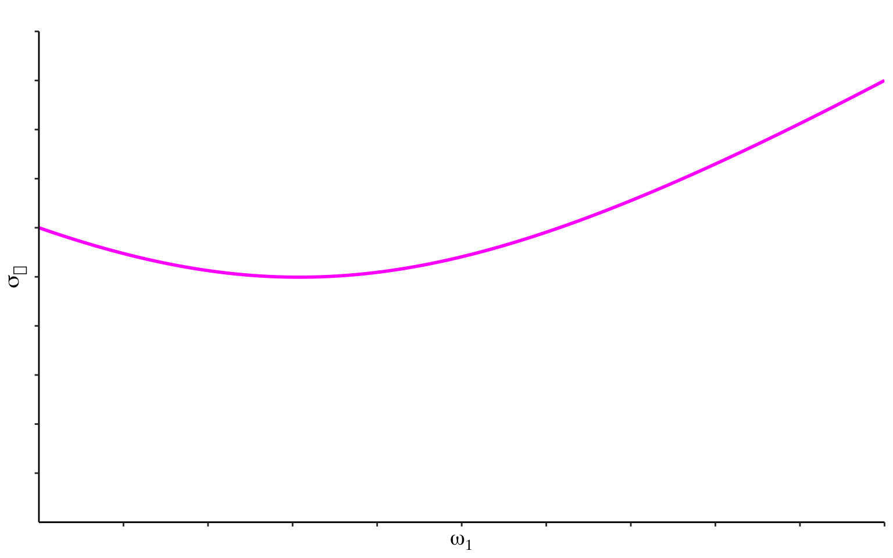
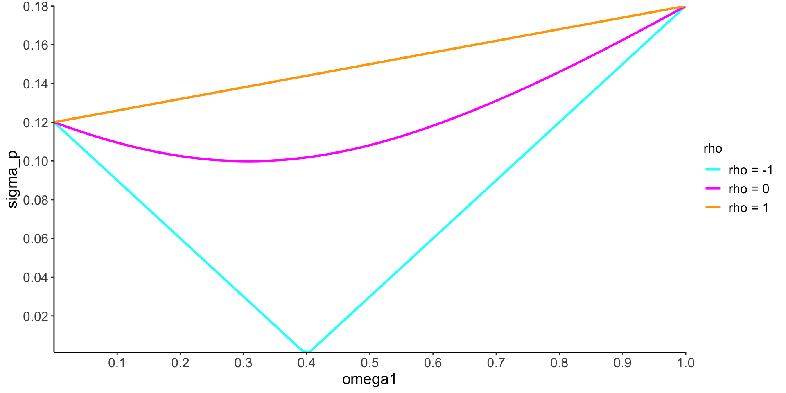
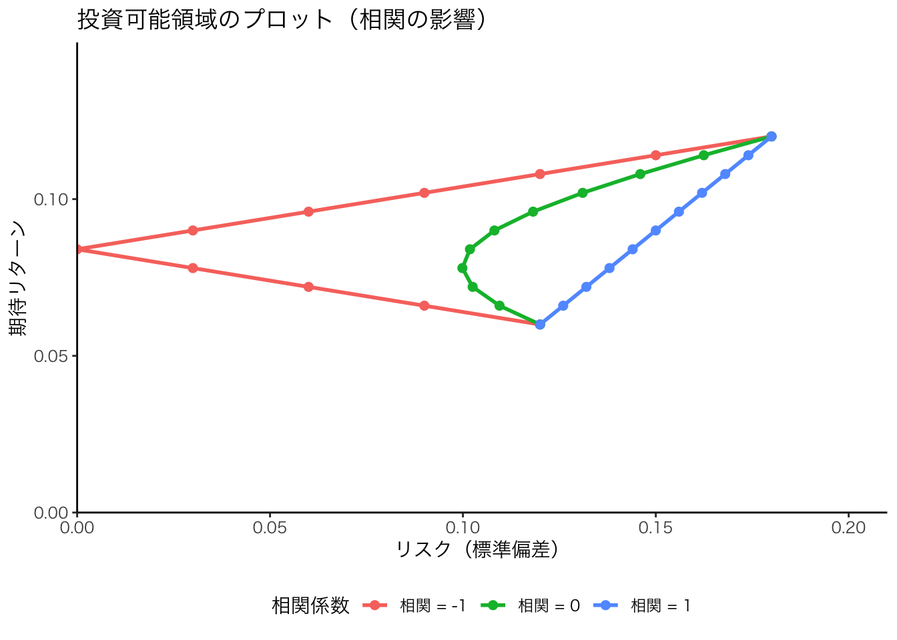

pacman::p_load(tidyverse, ggthemes, patchwork)5 ポートフォリオ理論
この章では，ファイナンスの主要分野の1つであるポートフォリオ理論(portfolio theory)について説明します。
5.1 投資のリターン
リターンの定義
t=0で金額X_0の投資を行い，t=1でX_1のペイオフを得るとき， \begin{aligned} R \equiv \frac{X_1 - X_0}{X_0} = \frac{X_1}{X_0} -1 \end{aligned}
を投資収益率(リターン)とよびます。
X_1は利子・配当などのインカムゲインと資産価格の上昇(下落)から生じるキャピタル・ゲイン(ロス)との合計額からなります。
例1:リターン
90万円の資産を購入し，1年後117万円で売却できるなら，その投資収益率はいくらか？ R = \frac{117-90}{90} = \frac{117}{90}-1 =0.3
Rで計算すると
R = (117 - 90) / 90
print(R)[1] 0.3
例2 : 株式
X_{t-1} は時点 t-1 の株価 P_{t-1} ， X_t はその株式が時点 t でもたらすペイオフとなる。 ここで，時点tでもたらすペイオフとは，株式を保有することで得られる配当D_tと時点tにおける株式の価値(配当落ち株価P_t)の合計となる。 したがって，時点t-1から時点tにかけて実現した株式の投資リターンR_tは， R_t \equiv \frac{X_t}{X_{t-1}} - 1 = \frac{D_t + P_t}{P_{t-1}} -1 \tag{5.1} ここでDは一株当りの配当で，Pは一株当りの株価である。
日時リターンを(Equation 5.1) 式に従って計算する場合は，年間配当額 D_{i,t} を365で割ることで日次配当を計算することになるが，ほとんどの場合無視できるほど小さいので，株式iの日時リターンR_{i,t}は， R_{i,t} = \frac{P_{i,t}}{P_{i,t-1}} - 1
で計算される。
資金を資産1と資産2に分けて運用するポートフォリオを想定する。 企業を i , 時点を t で表し，投資時点を t=0 ，ペイオフが実現する時点を t=1 で表す。
- X_0：ポートフォリオへの投資額
- X_{i,0}：各資産i，i = 1,2への投資金額
- X_1：ポートフォリオから総ペイオフ
- X_{i,1}：資産iからのペイオフ
このとき，各資産 i \in \{1,2\} のリターンは，
R_t \equiv \frac{X_{i,0}}{X_{i,1}} -1,% \quad \text{ for } i=1,2
となる。 ここで，以下の条件が成立していることに留意せよ。 \begin{aligned} X_{1,0} + X_{2,0} &= X_0\\ X_{1,1} + X_{2,1} &= X_1 \end{aligned}
ポートフォリオの投資収益率をR_pとすると，
\begin{aligned} R_p &\equiv \frac{X_1}{X_0} -1 \\ &= \frac{X_{1,1} + X_{2,1}}{X_0} -1\\ &= \frac{X_{1,1}}{X_0} + \frac{X_{2,1}}{X_0} -1 \\ &= \frac{X_{1,0}}{X_0} \times \frac{X_{1,1}}{X_{1,0}} + \frac{X_{2,0}}{X_0} \times \frac{X_{2,1}}{X_{2,0}} -1 \end{aligned}
である。 ここで，\omega _i \equiv \frac{X_{i,0}}{X_0} を資産 i への投資率，ただし \omega _1 + \omega_2 = 1 とすると，次式が求められる。
\begin{aligned} R_p &= \omega _1 \left ( \frac{X_{1,1}}{X_{1,0}} -1 \right ) + \omega _2 \left ( \frac{X_{2,1}}{X_{2,0}} -1 \right ) \nonumber \\ &= \omega _1 R_1 + \omega _2 R_2 \end{aligned}
一般に，資金を資産1，資産2， \cdots ，資産nに分けて運用するポートフォリオを想定する。 X_0 をポートフォリオへの投資額，資産 i \in \{1,\dots , n \} への投資金額を X_{i,0} とする。 また X_1 をポートフォリオからの総ペイオフ，X_{i,1} を資産 i \in \{1,\dots , n \} からのペイオフとする。 このとき，ポートフォリオの投資収益率は，
R_p = \sum_{i=1}^{n} \omega _i R_i
ここで， R_i \equiv \frac{X_{i,1}}{X_{i,0}} - 1, \qquad \omega _i \equiv \frac{X_{i,0}}{X_0} \quad \text{ for } i=1,\dots,n ただし\sum \omega _i = 1である。
投資のポジションは次の2つに分けられる。
- \omega _i >0：資産に対して買いポジション(ロングポジション)
- \omega _i <0：資産に対して空売り(ショートポジション)
例3
資産10億円をもつ投資家が，資産1に8億円，資産2に2億円投資する場合， \omega _1 = 0.8, \quad \omega _2 = 0.2
例4
資金10億円をもつ投資家が，資産2を2億円相当分空売り，空売りで入手した資金を自己資金を12億円を，資産1に投資する場合 \omega _1 = 1.2, \quad \omega _2 = -0.2
\omega _i を資産 i \in \{ 1,2\} の投資率とするとき，ポートフォリオの期待リターンは， \mathrm{E}[R_p ] \equiv \mu _p = \omega _1 \mu_1 + \omega _2 \mu _2 となる。 ここで，\mathrm{E}[R_i]=\mu _i, \omega _1 + \omega _2 =1 となる。 \omega_1 + \omega _2 = 1より，以下のように書き直せる。
\mathrm{E}[R_p ] \equiv \mu _p = \omega _1 \mu_1 + (1-\omega _1) \mu _2
例5
各資産の投資率(\omega _1, \omega_2) = (0.4,0.6)，各資産の期待リターン(\mu_1, \mu_2)=(0.12,0.06)のとき， ポートフォリオの期待リターンは， \mu _p = 0.4 \times 0.12 + 0.6 \times 0.06 = 0.084
投資比率\omega_1とポートフォリオの期待収益率\mu _pとの関係は次のように表される。
この図からわかるように，投資率とポートフォリオの期待リターンの間には線形関係が成立する。
5.2 ポートフォリオのリスク
資産1がもたらすリターンの分散を \sigma^2 _1 ，資産2のリターンの分散を \sigma^2 _2 ，資産1と資産2の収益の共分散を \sigma _{12} とする。 このときポートフォリオのリターンの分散は， \mathrm{Var} [R_p] \equiv \sigma ^2_p = \omega _1^2 \sigma ^2_1 + \omega_2^2 \sigma ^2_2 + 2 \omega _1 \omega_2 \sigma _{12} \tag{5.2}
となる(第2回講義資料の(23)式と(25)式を参照)。
相関係数を \rho で表すとき，(Equation 5.2) 式は， \mathrm{Var} [R_p] \equiv \sigma ^2_p = \omega _1^2 \sigma ^2_1 + \omega_2^2 \sigma ^2_2 + 2 \omega _1 \omega_2 \textcolor{red}{\rho \sigma _1 \sigma _2} \tag{5.3}
ここで相関係数 \rho の定義は次式となる。
\rho = \frac{\sigma _{12}}{\sigma ^1 \sigma ^2} \Longleftrightarrow \sigma _{12} = \rho \sigma _1 \sigma _2
例6
各資産の投資率が(\omega _1, \omega _2) =(0.4, 0.6)，各資産のリターンの分散が(\sigma^2_1, \sigma ^2_2) =(0.18^2, 0.12^2)，相関係数\rho =0のとき，ポートフォリオのリターンの分散は，()式より， \begin{aligned} \sigma ^2_p &= 0.4^2 \times 0.18^2 + 0.6^2 \times 0.12^2 + 2 \times 0.4 \times 0.6 \times 0 \times 0.18 \times 0.12\\ &= 0.010368 \nonumber \\ \sigma _p &= \sqrt{0.010368} = 0.102 \nonumber \end{aligned}
一般に，n 種ある資産 i \in \{1,2,\dots , n\} への各投資割合を \omega _i で表し，投資割合の合計が1，つまり \sum \omega _1 =1 の投資率とするとき，
ポートフォリオの期待リターン：\mu _p \mathrm{E} [R_p] \equiv \mu _p = \sum _{i=1}^n \omega _i \mu _i \tag{14-1}
ここで，\mathrm{E}[R_i] = \mu _i
ポートフォリオのリターンの分散：\sigma ^2_p \mathrm{V}[R_p] \equiv \sigma ^2_p =\sum _{i=1}^n \omega _i^2 \sigma ^2_i + 2\sum _{i \not = j}^n \sum _{j\not = i}^n \omega _i \omega _j \sigma _{i,j} \tag{14-2} ここで，\mathrm{V}[R_i] = \sigma^2_i , \mathrm{Cov}[R_i,R_j] \equiv \sigma_{i,j} for i \not = j
(14-2)式に関しては，第2回の講義資料(23)式と(25)式を参照
投資率\omega _1とポートフォリオのリターンの標準偏差\sigma _pの関係
Code
# パラメータの定義
sigma_A <- 0.18 # 資産Aの標準偏差
sigma_B <- 0.12 # 資産Bの標準偏差
# 資産Aの比率（ω1）を0から1まで100点で作成
omega1 <- seq(0, 1, length.out = 100)
# ポートフォリオの標準偏差（リスク）の計算
sigma_p <- sqrt(omega1^2 * sigma_A^2 + (1 - omega1)^2 * sigma_B^2)
# データフレームの作成
data <- data.frame(omega1, sigma_p)
# 目盛り用のデータフレーム（X軸とY軸の目盛り）
x_ticks <- seq(0.1, 1.0, by = 0.1)
y_ticks <- seq(0.02, 0.20, by = 0.02)
# ggplot2でプロット
ggplot(data, aes(x = omega1, y = sigma_p)) +
geom_line(color = "magenta", size = 1) + # 曲線を描画
labs(
x = expression(omega[1]), # x軸ラベル
y = expression(sigma[p]), # y軸ラベル
title = "ポートフォリオの標準偏差と資産配分"
) +
scale_x_continuous(breaks = x_ticks, expand = c(0, 0)) + # x軸の目盛り
scale_y_continuous(breaks = y_ticks, expand = c(0, 0)) + # y軸の目盛り
theme_classic(base_family = "Japan1GothicBBB") + # Mac用フォント指定
theme(
axis.text.x = element_text(size = 12),
axis.text.y = element_text(size = 12),
axis.title.x = element_text(size = 14),
axis.title.y = element_text(size = 14)
) +
coord_cartesian(xlim = c(0, 1), ylim = c(0, 0.20)) # 余白を削除
リスク低減効果の源泉について考える。
\begin{aligned} \sigma _p^2 &= \omega _1^2 \sigma ^2_1 + \omega_2^2 \sigma ^2_2 + 2 \omega _1 \omega _2 \rho \sigma _1 \sigma_2\\ &= (\omega _1 \sigma_ 1 + \omega _2 \sigma _2)^2 -2 (1-\rho )\omega _1 \omega _2 \sigma _1 \sigma _2 \end{aligned}
\omega _1 と \omega _2 が非負ならば， (1-\rho)\omega _1 \omega _2 \sigma _1 \sigma _2 も非負 \sigma _p \geq \omega _1 \sigma _1 + \omega _2 \sigma _2
ポートフォリオの総リスクは，個別資産の総リスクの加重和以下になる。 \rho = 1 でない限り，厳密な不等号が成立する。
\rho = 1 のとき， \begin{aligned} \sigma _p^2 &= \omega _1^2 \sigma ^2_1 + \omega_2^2 \sigma ^2_2 + 2 \omega _1 \omega _2 \rho \sigma _1 \sigma_2 = (\omega _1 \sigma_1 + \omega _2 \sigma _2)^2\\ \sigma _p &= \omega _1 \sigma_ 1 + \omega _2 \sigma _2 \end{aligned}
リスク分散効果への相関係数のインパクトについて見ていく。 リスク分散の効果は，\rho の大きさに依存している。
Code
# x軸の範囲
x_vals <- seq(0, 1, length.out = 100)
# y軸の計算
sigma_p_rho0 <- sqrt(x_vals^2 * 0.18^2 + (1 - x_vals)^2 * 0.12^2) # マゼンタ
sigma_p_rho1 <- x_vals * 0.18 + (1 - x_vals) * 0.12 # シアン
sigma_p_rho_neg1 <- round(sqrt(0.0144 - 0.072 * x_vals + 0.09 * x_vals^2), digits = 5)
# データフレームの作成
df <- data.frame(
omega1 = rep(x_vals, 3),
sigma_p = c(sigma_p_rho0, sigma_p_rho1, sigma_p_rho_neg1),
rho = factor(rep(c("rho = 0", "rho = 1", "rho = -1"), each = length(x_vals)))
)
# プロット
ggplot(df, aes(x = omega1, y = sigma_p, color = rho)) +
geom_line(size = 1) +
scale_color_manual(values = c("cyan", "magenta", "orange")) +
theme_classic() +
theme(
axis.text = element_text(size = 12),
axis.title = element_text(size = 14),
legend.title = element_text(size = 12),
legend.text = element_text(size = 12)
) +
# 0以下の余白を削除
scale_x_continuous(breaks = seq(0.1, 1, by = 0.1), expand = c(0, 0)) +
scale_y_continuous(breaks = seq(0.02, 0.18, by = 0.02), expand = c(0, 0))
5.3 2資産の最適化問題の解法
株式と安全資産の2資産を考える。
- R_s: 株式リターン \mathrm{E}[R_s]=\mu_s, \quad \mathrm{V}[R_s] = \sigma ^2_s
- r_f: 安全資産リターン \mathrm{E}[r_f]=r_f, \quad \mathrm{V}[r_f] = 0
- R_p: ポートフォリオの期待リターン \mathrm{E}[R_p]=\mu_p, \quad \mathrm{V}[R_p] = \sigma ^2_p
次のような投資家の期待効用関数を仮定する。 \mathrm{E}[U] = \mu _p - \frac 12 \gamma \sigma _p^2, \quad \gamma \text{は絶対的リスク回避度} \tag{5.4}
- ポートフォリオの期待リターンが上昇するほど期待効用は上昇
- ポートフォリオの分散(標準偏差)が小さいほど期待効用は上昇
投資家は，できる限り高い期待リターンと標準偏差の低いポートフォリオを選択しようとする。
2資産の最適化問題の解法について見てみる。
投資率(\omega _1, \omega_ 2)とするとき，
- ポートフォリオの期待リターン \mathrm{E}[R_p] = \omega _1 \mu_s + \omega _2 r_f \tag{5.5}
- ポートフォリオの期待リターンの分散 \mathrm{V}[R_p] = \omega _1^2 \sigma ^2_s \tag{5.6}
- 式と (Equation 5.6) 式を (Equation 5.4) 式に代入
\mathrm{E}[U] = \mu _p - \frac{\gamma }{2} \sigma ^2_p = \omega _1 \mu_s + \omega _2 r_f - \frac{\gamma }{2}\omega ^2_1 \sigma ^2_s
\omega _1 + \omega _2 = 1 より，投資家の期待効用関数は，
\mathrm{E}[U] = \omega _1 ( \mu_s - r_f) -\frac{\gamma }{2} \omega _1^2 \sigma ^2_s + r_f \tag{5.7}
期待効用(Equation 5.7) 式を最大にする最適なポートフォリオとなる株式への投資率(\omega _1)を求める。
%f(\omega _1) \equiv \mathrm{E}[U] = \omega _1 ( \mu_s - r_f) - \frac{\gamma }{2}\omega _1^2 \sigma^2_s + r_f
と置くと，f(\omega _1)は\omega _1に関する上に凸の2次関数である。
\omega _1について，最適化の1階の条件を求め，最適\omega _1^*を計算する。 \begin{aligned} %f'(\omega _1) \frac{\partial \mathrm{E}[U]}{\partial \omega _1} &= \mu_s -r_f - \gamma \omega _1 \sigma ^2_s =0 \\ \omega _1^* &= \frac{1}{\gamma } \frac{\mu_s - r_f}{\sigma ^2_s}, \quad \mu_s - r_f \text{はリスクプレミアム} \end{aligned} 求めた株式への最適投資率\omega^* _1について比較静学を行い，最適解の挙動を確認する。
まず，リスクプレミアムと投資率の関係は， \begin{aligned} \frac{\partial \omega _1^*}{\partial (\mu_s - r_f)} = \frac{1}{\gamma }\frac{1}{\sigma _s^2} > 0 \end{aligned} となり，リスクプレミアムと投資率の間には正の関係がある。 次に，株式のリスクと投資率の関係は， \frac{\partial \omega _1^*}{\partial \sigma ^2_s} = -2 \frac{1}{\gamma }\frac{\mu_s -r_f }{\sigma _s^4} < 0 となり，リスクと投資率の間には負の関係がある。 最後に，リスク回避度と投資率の関係は， \frac{\partial \omega _1^*}{\partial \gamma} = - \frac{1}{\gamma^2 }\frac{\mu_s -r_f }{\sigma _s^2} < 0 となり，リスク回避度と投資率の間には負の関係がある。
まとめると，リスクプレミアム\mu_s-r_fが上昇，株式のリスク\sigma_s^2が減少，リスク回避度 \gamma が減少するとき，株式への投資割合 \omega _1 が増える。
5.4 投資可能集合と効率的フロンティア
リスク資産のみからなる投資対象があるとする。 例6のケース(ただし,相関係数 \rho =0 ， \omega _1 の値は任意)では，
\mu _p = \omega _1 \times 0.12 + (1-\omega _1)\times 0.06 = 0.06(1+\omega _1) \tag{5.8}
\begin{aligned} \sigma_s^2 &= \omega _1^2 \times 0.18^2 +(1-\omega _1)^2 \times 0.12^2 + 2 \omega _1(1-\omega _1) \times 0 \times 0.18 \times 0.12 \nonumber \\ &=(0.18^2 + 0.12^2)\omega _1^2 - 2 \times 0.12 ^2 \omega _1 + 0.12^2 \end{aligned} \tag{5.9}
- 式を \omega _1 に関して解いて(Equation 5.9) 式に代入する。
(\mu _p , \sigma _p) の関係は双曲線である。 後で見るように，相関係数の大きさに依存して双曲線の形状は変化する。 以下で投資可能領域を図示する。
Code
# text p.65
# 設定
rho = 0
sigma_A <- 0.18 # 資産Aの標準偏差
sigma_B <- 0.12 # 資産Bの標準偏差
mu_A <- 0.12 # 資産Aの期待リターン
mu_B <- 0.06 # 資産Bの期待リターン
# 保有費率
wa <- seq(0,1,by = 0.01)
wb <- 1 - wa
df <- tibble(
mu_p = wa * mu_A + wb * mu_B,
sigma_p = sqrt(wa^2 * sigma_A^2 + wb^2 * sigma_B^2 + 2 * rho * wa * wb * sigma_A * sigma_B),
label= c(
"0,1", rep("", 9),
"0.1,0.9",rep("", 9),
"0.2,0.8",rep("", 9),
"0.3,0.7",rep("", 9),
"0.4,0.6",rep("", 9),
"0.5,0.5",rep("", 9),
"0.6,0.4",rep("", 9),
"0.7,0.3",rep("", 9),
"0.8,0.2",rep("", 9),
"0.9,0.1",rep("", 9),
"1,0")
)
g <- ggplot(df) + aes(y = sigma_p, x = mu_p) + geom_line() + geom_point(data = filter(df, label != ""), aes(label = label), size = 2) + coord_flip() + ylim(0, 0.2) + xlim(0, 0.14) +
labs(title = "投資可能領域のプロット", x = "期待リターン", y = "リスク（標準偏差）") + theme_classic(base_family = "HiraKakuPro-W3") # Add labels for clarity
# 資産Aと資産Bの文字を追加し，hiragino Kaku Gothic ProNはMacの場合のフォント指定
g <- g +
geom_text(aes(label = "資産A"), x = 0.12, y = 0.19, size = 4, family = "HiraKakuPro-W3") +
geom_text(aes(label = "資産B"), x = 0.06, y = 0.13, size = 4, family = "HiraKakuPro-W3") +
geom_text(aes(label = "無相関のケース"), x = 0.09, y = 0.16, size = 4, family = "HiraKakuPro-W3") # Specify the font family for consistency
print(g)曲線上の点が投資可能領域(ポートフォリオは実現リターンと標準偏差の組み合わせとなる)。
2つのリスク資産のリターンの相関係数がリスク低減効果に与える影響を図示すると，次のようになる。 相関係数がマイナス1に近づくほど，左に弓なりになる。つまり**ポートフォリオのリスク低減効果が高いことを意味する。
Code
# 相関係数のリスト
rho_values <- c(-1, 0, 1)
# 資産の標準偏差と期待リターン
sigma_A <- 0.18 # 資産Aの標準偏差
sigma_B <- 0.12 # 資産Bの標準偏差
mu_A <- 0.12 # 資産Aの期待リターン
mu_B <- 0.06 # 資産Bの期待リターン
# 保有比率
wa <- seq(0, 1, by = 0.1)
wb <- 1 - wa
# データフレーム作成
df <- expand.grid(wa = wa, rho = rho_values) |>
mutate(
wb = 1 - wa,
mu_p = wa * mu_A + wb * mu_B,
sigma_p = sqrt(wa^2 * sigma_A^2 + wb^2 * sigma_B^2 + 2 * rho * wa * wb * sigma_A * sigma_B),
rho_label = factor(rho, levels = c(-1, 0, 1), labels = c("相関 = -1", "相関 = 0", "相関 = 1"))
)
# waが0.1刻みのデータを抽出
label_points <- df |>
filter(wa %in% seq(0, 1, by = 0.1))
# プロット
g <- ggplot(df, aes(x = mu_p, y = sigma_p, color = rho_label)) +
geom_line(size = 1) +
geom_point(data = label_points, aes(x = mu_p, y = sigma_p, color = rho_label), size = 2) + # 凡例と色を統一
coord_flip() +
scale_y_continuous(limits = c(0, 0.21), expand = c(0, 0)) + # 0以下の余白を削除
scale_x_continuous(limits = c(0, 0.15), expand = c(0, 0)) + # x軸の余白も削除
labs(
title = "投資可能領域のプロット（相関の影響）",
x = "期待リターン",
y = "リスク（標準偏差）",
color = "相関係数"
) +
theme_classic(base_family = "HiraKakuPro-W3") +
theme(legend.position = "bottom") # 凡例を下に配置
# 資産Aと資産B、無相関ケースのラベル追加
# g <- g +
# geom_text(label = "資産A", x = 0.12, y = 0.19, size = 4, family = "HiraKakuPro-W3") +
# geom_text(label = "資産B", x = 0.06, y = 0.13, size = 4, family = "HiraKakuPro-W3") +
# geom_text(label = "無相関のケース", x = 0.09, y = 0.19, size = 4, family = "HiraKakuPro-W3")
# 描画
print(g)
3つのリスク資産のみのケースを考える。 リスク資産が増えれば増えるほど，左に弓なりになる。 つまりポートフォリオのリスク低減効果が大きくなる。
Code
rho <- 0 # 相関係数（仮にすべての組み合わせで無相関とする）
# 資産の標準偏差と期待リターン
sigma_A <- 0.18 # 資産Aの標準偏差
sigma_B <- 0.12 # 資産Bの標準偏差
sigma_C <- 0.07 # 資産Cの標準偏差
mu_A <- 0.12 # 資産Aの期待リターン
mu_B <- 0.06 # 資産Bの期待リターン
mu_C <- 0.04 # 資産Cの期待リターン
# 保有比率（wa, wb の組み合わせを作成し、wc = 1 - wa - wb を計算）
wa_wb_grid <- expand.grid(wa = seq(0, 1, by = 0.05), wb = seq(0, 1, by = 0.05)) |>
mutate(wc = 1 - wa - wb) |>
filter(wc >= 0) # wcが負にならないように制限
# 3資産ポートフォリオの計算
df <- wa_wb_grid |>
mutate(
mu_p = wa * mu_A + wb * mu_B + wc * mu_C,
sigma_p = sqrt(
wa^2 * sigma_A^2 + wb^2 * sigma_B^2 + wc^2 * sigma_C^2 +
2 * rho * (wa * wb * sigma_A * sigma_B + wb * wc * sigma_B * sigma_C + wc * wa * sigma_C * sigma_A)
)
)
# プロット
g <- ggplot(df, aes(x = mu_p, y = sigma_p)) +
geom_point(alpha = 0.3, color = "blue") + # 3資産の投資可能領域を点でプロット
coord_flip() +
scale_y_continuous(limits = c(0, 0.21), expand = c(0, 0)) + # 0以下の余白を削除
scale_x_continuous(limits = c(0, 0.15), expand = c(0, 0)) + # x軸の余白も削除
labs(
title = "投資可能領域のプロット（資産A, B, C）",
x = "期待リターン",
y = "リスク（標準偏差）"
) +
theme_classic(base_family = "HiraKakuPro-W3") +
theme(legend.position = "none") # 凡例を非表示（点のプロットのため）
# 資産A, B, Cのラベル追加
g <- g +
geom_text(label = "資産A", x = 0.12, y = 0.19, size = 4, family = "HiraKakuPro-W3") +
geom_text(label = "資産B", x = 0.06, y = 0.13, size = 4, family = "HiraKakuPro-W3") +
geom_text(label = "資産C", x = 0.04, y = 0.08, size = 4, family = "HiraKakuPro-W3")
# 描画
print(g)3つのリスク資産への投資可能領域は，曲線上ではなく曲線に囲まれた領域(集合)となる。ただこのうち，同じリスク(同じ標準偏差)の下で最も高い期待リターンを実現するポートフォリオが最適となるため，双曲線の上半分が望ましいポートフォリオとなり，これを効率的フロンティアと呼ぶ。
Code
rho <- 0 # 相関係数（仮にすべての組み合わせで無相関とする）
# 資産の標準偏差と期待リターン
sigma_A <- 0.18 # 資産Aの標準偏差
sigma_B <- 0.12 # 資産Bの標準偏差
sigma_C <- 0.07 # 資産Cの標準偏差
mu_A <- 0.12 # 資産Aの期待リターン
mu_B <- 0.06 # 資産Bの期待リターン
mu_C <- 0.04 # 資産Cの期待リターン
# 保有比率（wa, wb の組み合わせを作成し、wc = 1 - wa - wb を計算）
wa_wb_grid <- expand.grid(wa = seq(0, 1, by = 0.01), wb = seq(0, 1, by = 0.01)) |>
mutate(wc = 1 - wa - wb) |>
filter(wc >= 0) # wcが負にならないように制限
# 3資産ポートフォリオの計算
df <- wa_wb_grid |>
mutate(
mu_p = wa * mu_A + wb * mu_B + wc * mu_C,
sigma_p = sqrt(
wa^2 * sigma_A^2 + wb^2 * sigma_B^2 + wc^2 * sigma_C^2 +
2 * rho * (wa * wb * sigma_A * sigma_B + wb * wc * sigma_B * sigma_C + wc * wa * sigma_C * sigma_A)
)
)
# 効率的フロンティアを特定（sigma_p が同じなら mu_p が最大のものを選択）
# プロット
g <- ggplot(df, aes(x = mu_p, y = sigma_p)) +
geom_point(alpha = 0.1, color = "blue") + # 3資産の投資可能領域を点でプロット
# geom_point(data = efficient_frontier, aes(x = mu_p, y = sigma_p), color = "red", size = 2) + # 効率的フロンティアの点を赤色で表示
coord_flip() +
scale_y_continuous(limits = c(0, 0.21), expand = c(0, 0)) + # 0以下の余白を削除
scale_x_continuous(limits = c(0, 0.15), expand = c(0, 0)) + # x軸の余白も削除
labs(
title = "投資可能領域と効率的フロンティア（資産A, B, C）",
x = "期待リターン",
y = "リスク（標準偏差）"
) +
theme_classic(base_family = "HiraKakuPro-W3") +
theme(legend.position = "none") # 凡例を非表示（点のプロットのため）
g <- g +
geom_text(label = "資産A", x = 0.12, y = 0.19, size = 4, family = "HiraKakuPro-W3") +
geom_text(label = "資産B", x = 0.06, y = 0.13, size = 4, family = "HiraKakuPro-W3") +
geom_text(label = "資産C", x = 0.04, y = 0.08, size = 4, family = "HiraKakuPro-W3")
# 描画
print(g)# 変数の定義
rho <- 0 # 無相関
sigma_A <- 0.18
sigma_B <- 0.12
sigma_C <- 0.07
mu_A <- 0.12
mu_B <- 0.06
mu_C <- 0.04
# 共分散行列の作成（対角行列）
cov_matrix <- matrix(c(sigma_A^2, 0, 0,
0, sigma_B^2, 0,
0, 0, sigma_C^2),
nrow = 3, byrow = TRUE)
# ポートフォリオの生成
set.seed(123)
n_portfolios <- 5000
weights <- matrix(runif(3 * n_portfolios), ncol = 3)
weights <- weights / rowSums(weights) # 各行の合計を1にする
# 期待リターンとリスクを計算
port_returns <- weights %*% c(mu_A, mu_B, mu_C)
port_risks <- sqrt(rowSums((weights %*% cov_matrix) * weights))
# データフレームに格納
portfolio_data <- tibble(Return = port_returns, Risk = port_risks)
# 効率的フロンティアのプロット
ggplot(portfolio_data, aes(x = Risk, y = Return)) +
geom_point(alpha = 0.5, color = "blue") +
labs(title = "Efficient Frontier",
x = "Risk (Standard Deviation)",
y = "Expected Return") +
scale_x_continuous(limits = c(0, 0.21), expand = c(0, 0)) + # 0以下の余白を削除
scale_y_continuous(limits = c(0, 0.15), expand = c(0, 0)) + # x軸の余白も削除
theme_minimal()5.4.1 複数資産のケース：安全資産も含む
安全資産(リターン r_f )と1つのリスク資産(期待リターン \mu _1 ,その分散 \sigma ^2_1 )か らなるポートフォリオの期待リターン \mu _p は， \mu _p = \omega _1 \mu _1 + (1 - \omega _1)r_f = (\mu _1 - r_f)\omega _1 + r_f \tag{5.10}
となり，その分散 \sigma ^2_p は,
\begin{aligned} \sigma ^2_p &= \mathrm{E}\left[ (R_p - \mu _p)^2 \right ]\\ &= \mathrm{E}\left[ \left ( \omega _1 R_1 + (1-\omega _1)r_f - (\omega _1 \mu_1 + (1-\omega _1)r_f) \right ) ^2 \right ] \nonumber \\ &= \mathrm{E}\left[ \left (\omega_1 ( R_1 - \mu _1) \right ) ^2 \right ]\nonumber \\ &= \omega _1 ^2 \mathrm{E} \left [ (R_1 - \mu _1)^2 \right ] \nonumber\\ &=\omega _1^2 \sigma_1^2 \nonumber \end{aligned} \tag{5.11}
となる。 つぎに，(Equation 5.11 ) 式を変形する。 \sigma_1>0 かつ \omega_1 >0 であるため，\sigma _p = \omega _1 \sigma _1 となり，これより \omega_1 = \sigma _p / \sigma_1 と変形できる。この \omega_1 を(Equation 5.10 ) 式に代入し整理する。
\begin{aligned} \mu_p &= (\mu_1 - r_f) \omega _1 + r_f \\ &= (\mu_1 - r_f) \frac{\sigma_p}{\sigma_1} + r_f \\ &= \left ( \frac{\mu _1- r_f}{\sigma_1} \right ) \sigma _p +r_f \end{aligned} となり，ポートフォリオの期待リターン \mu _p は，無リスク利子率 r_f を切片，傾きを \frac{\mu _1 - r_f}{\sigma _1} とする \sigma_p の線形関数となる。
以下のように，w_A \sigma _A = w_B \sigma_Bとなるようにw_Aとw_Bを選べば、\sigma _P = 0となるポートフォリオを作れる。
# text p.65
sigma_A <- 0.18 # 資産Aの標準偏差
sigma_B <- 0.12 # 資産Bの標準偏差
mu_A <- 0.12 # 資産Aの期待リターン
mu_B <- 0.06 # 資産Bの期待リターン
wa <- seq(0,1,by = 0.01)
wb <- 1 - wa
df <- tibble(
mu_p = wa * mu_A + wb*mu_B,
sigma_p = abs(wa*sigma_A - wb*sigma_B),
label= c(
"0,1", rep("", 9),
"0.1,0.9",rep("", 9),
"0.2,0.8",rep("", 9),
"0.3,0.7",rep("", 9),
"0.4,0.6",rep("", 9),
"0.5,0.5",rep("", 9),
"0.6,0.4",rep("", 9),
"0.7,0.3",rep("", 9),
"0.8,0.2",rep("", 9),
"0.9,0.1",rep("", 9),
"1,0")
)
ggplot(df) + aes(y = sigma_p, x = mu_p) + geom_line() + geom_point(data = filter(df, label != ""), aes(label = label), size = 2) + coord_flip()5.5 6． 2基金分離定理
効率的フロンティアにおける特徴として，リスク回避的な投資家であるならば，効率的フロンティア上のポートフォリオを選択しようとする。 また，安全資産と多数のリスク資産に投資する場合，効率的フロンティアは接点ポートフォリオと安全資産からなる効率的フロンティア(直線)であり，リスク回避的な投資家は，その効率的フロンティア上にあるポートフォリオを選択しようとする。
効率的フロンティア上の点は、安全資産と接点ポートフォリオの投資比率によって決定される。 効率的フロンティア上では，接点ポートフォリオを構成するリスク資産の投資比率は同一である。
2基金分離定理
2基金分離（Two-Fund Separation）とは、効率的フロンティア上に存在する2つのポートフォリオに投資することで組成されるポートフォリオは、効率的フロンティア上に存在することを示した定理である。この定理より、フロンティア上の2つポートフォリオを見つけることができれば、効率的フロンティア上のすべてのポートフォリオを再現できることがわかる。投資信託定理とも呼ばれる。
次のような投資家の期待効用関数を仮定する。
\mathbb{E}{U} = \mu _p - \frac{\gamma }{2} \sigma _p^2 \tag{5.12}
ここで，\gamma は絶対的リスク回避度であり，\gamma が大きいほど，リスク回避的な投資家であることを示す。
5.5.1 分離定理
期待効用最大化を実現する最適なポートフォリオは，安全資産と接点ポートフォリオの投資比率を表しており，接点ポートフォリオを構成するリスク資産の投資率は，投資家の効用関数(投資家の選好)には依存しない。
したがって，接点ポートフォリオを見つけることができれば，投資家の決定問題は，安全資産と接点ポートフォリオの投資比率として表すことができる。 これを分離定理という。